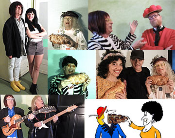
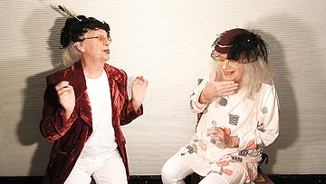

Neue Erfindung
Die Spätzles-Klappe
Kurz-Info zur neuen Erfindung.
Ansehen
Hier findest du Videos zu ✶ Frau Kächele & Frau Peters ✶ Eberhard Kächele Musik-Comedy ✶ Teflon Fonfara solo Classic Serie ✶ Teflon Fonfara solo live/TV ✶ Trickfilm

Teflon Fonfara solo · Playlist
Hier findest du Links zu den Videos:

Playlist